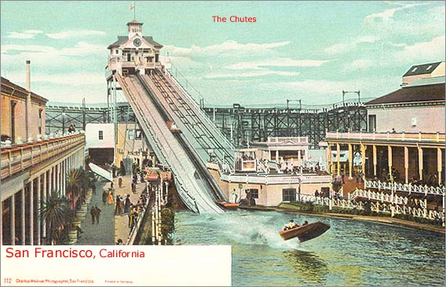

The Chutes, San Francisco, California
Notes on The Chutes
“The Chutes” was located in San Francisco’s Richmond District on 10th and 11th Avenue near “D” Street (now named Fulton Street). At The Chutes, you could “shoot the chutes” and see a moving picture Gillo’s Artesto. In November 1901, the Market Street Railway extended its McAllister line from 7th--8th Avenue to 11th Avenue to service The Chutes.

Click Here
Click Here
Click Here
Last Updated
Support Free-access Online History and Genealogy. Join Us!